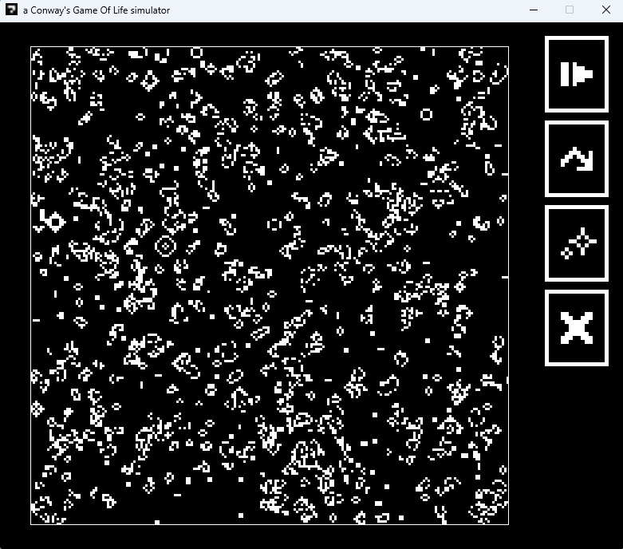
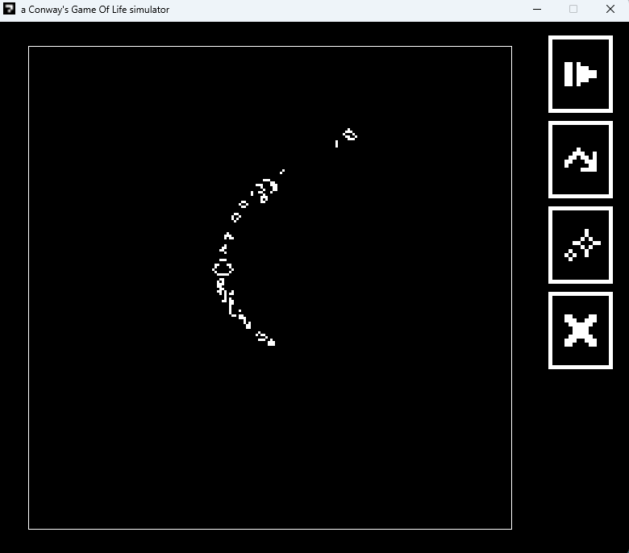
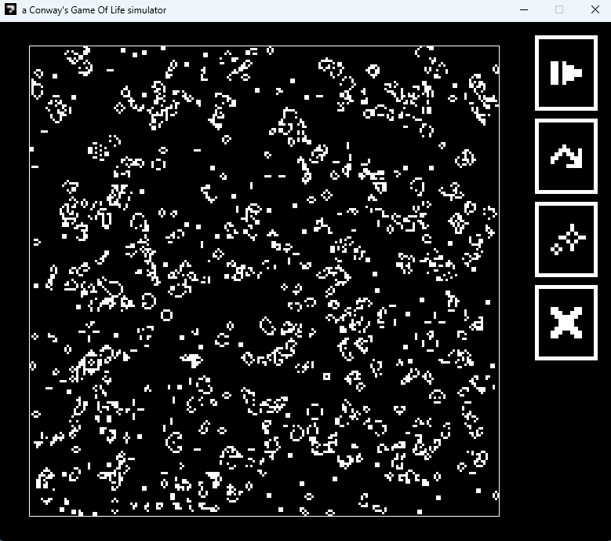

Conway's Game Of Life
https://github.com/Knz0-0/GameOfLifeDescription
Cette application est une simulation interactive du célèbre "Jeu de la Vie" de Conway, développée en Java avec une interface graphique en utilisant Swing. Le projet illustre les principes des automates cellulaires, où chaque cellule de la grille peut être vivante ou morte, et évolue selon des règles spécifiques basées sur l'état de ses voisines.



Fonctionnalités
- Démarrer/Arrêter : Permet à l'utilisateur de contrôler la simulation en démarrant ou en arrêtant le processus.
- Avancer d'un Pas : Offre la possibilité d'avancer la simulation d'une seule étape à la fois, permettant une observation précise des changements.
- Randomiser : Génère une nouvelle configuration de la grille de manière aléatoire pour varier les simulations.
- Effacer : Réinitialise la grille pour recommencer la simulation depuis un état vide.
- Ecrire Placer des cellules vivantes ou mortes manuellement.